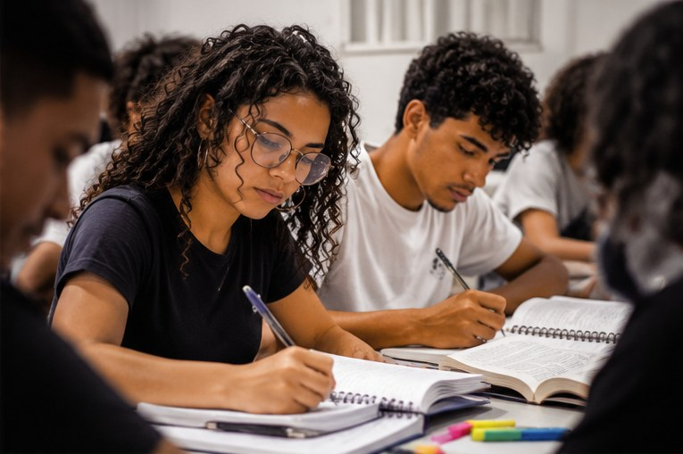
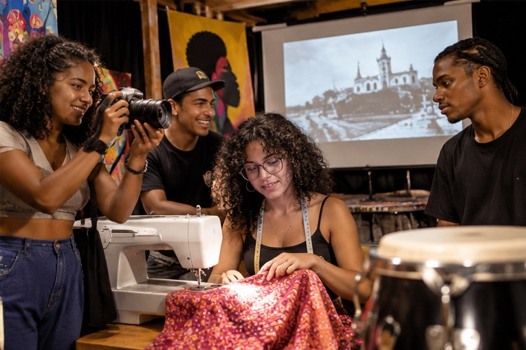

Pré-Vestibular Popular
Gratuito. ENEM, PISM e outros processos. Aulas presenciais aos sábados e intervenções on-line. Polos: Pádua, Aperibé e Miracema.
Preencher formulárioEscolha seu caminho de aprendizagem. Os formulários registram interesse e ajudam a organizar as próximas etapas.

Gratuito. ENEM, PISM e outros processos. Aulas presenciais aos sábados e intervenções on-line. Polos: Pádua, Aperibé e Miracema.
Preencher formulário VALOR SOCIAL A DEFINIR
VALOR SOCIAL A DEFINIRAcompanhamento pedagógico para crianças do 1º ao 5º ano. Valor social a definir.
Preencher formulário
VALORES SOCIAIS A DEFINIRInFoco, Ancestralidade, Moda Sustentável e Cineclube. Escolha um ou mais. Valores sociais a definir.
Preencher formulárioPreencha o formulário correspondente.
A Rede analisa as informações para planejar as atividades.
Critérios, locais, horários e disponibilidade serão comunicados.